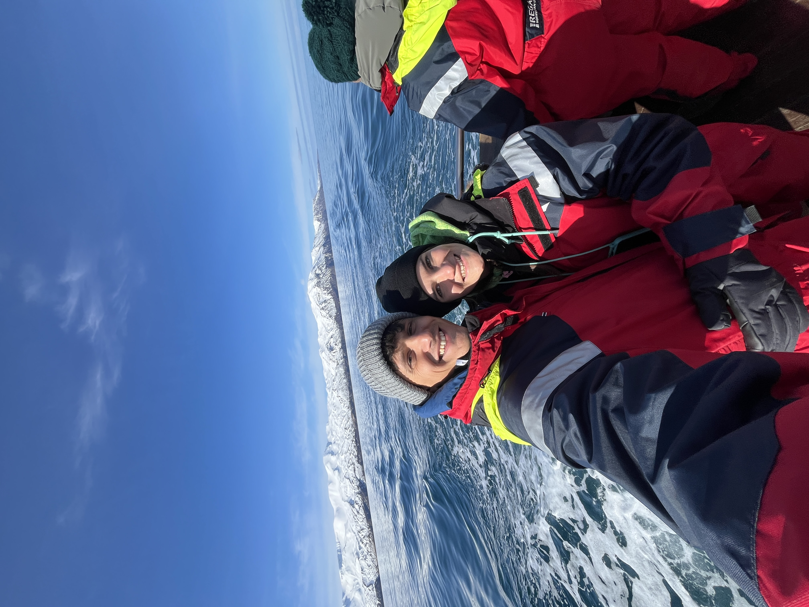
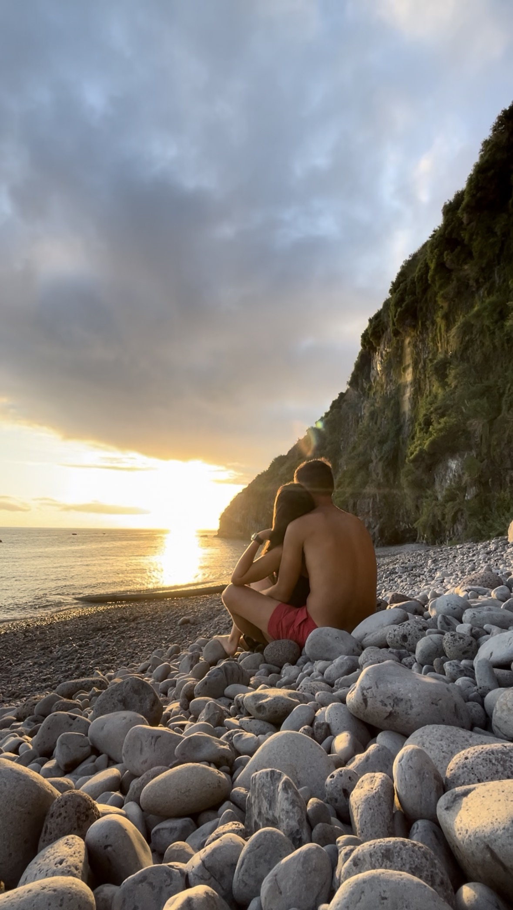
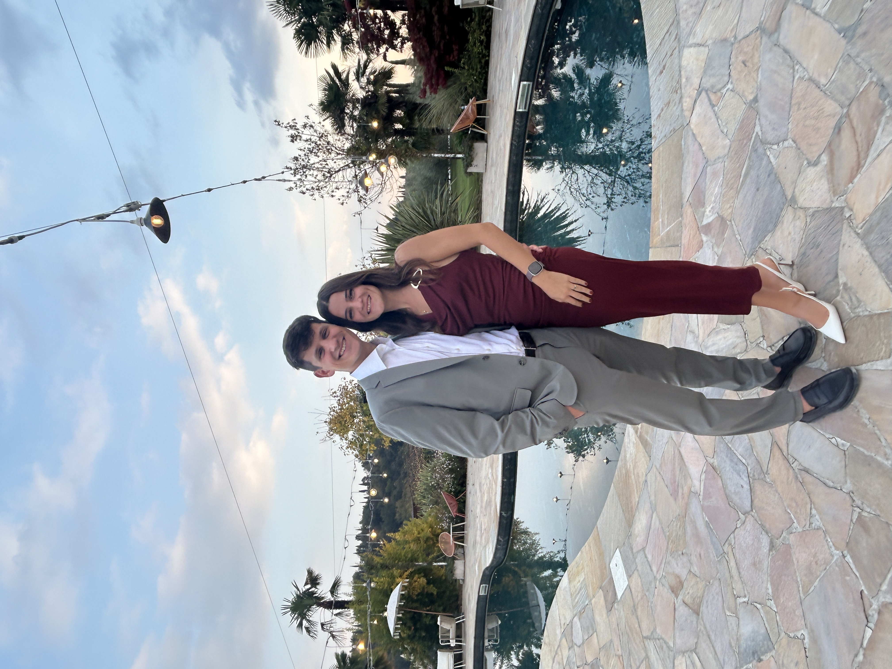

18 Luglio 2026

Tutto ha inizio nel 2021, tra i corridoi di Vittuone. Glo è nel pieno del dramma "tesi", Andre, invece, attraversa quegli stessi ambienti con la spensieratezza di chi lavora al service. Eppure i due, nonostante la vicinanza, non si erano mai davvero parlati.
A settembre il loro amico e collega Nico organizza un aperitivo in via Lario: quella sera, tra un brindisi e l'altro, scatta qualcosa: le chiacchierate si allungano fino a notte fonda e quella che era nata come una splendida amicizia, si trasforma in una complicità rara.
Insapettatamente dopo alcuni anni, sulla cima di un vulcano, Andre ha fatto la proposta. E ora? Nel 2026 smettiamo di programmare robot e iniziamo a organizzare il nostro matrimonio!

